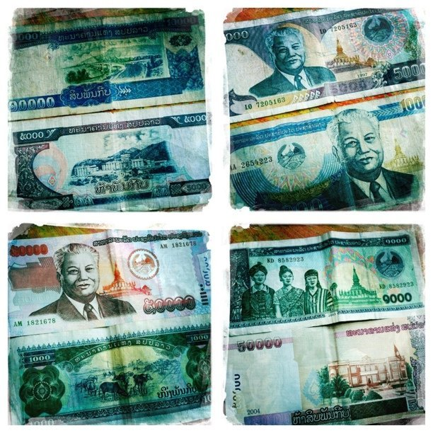

Tue, 15 Feb 2011 05:37:00 · vnsavitri · Laos · travel · money · design
the colourful design of lao kip bank notes even

The colourful design of Lao Kip bank notes. Even though 1 USD = 8,067.00 LAK, travelling in and around Laos, surprisingly, isn’t as cheap as one thought; especially when compared to neighbouring countries like Vietnam or Thailand.